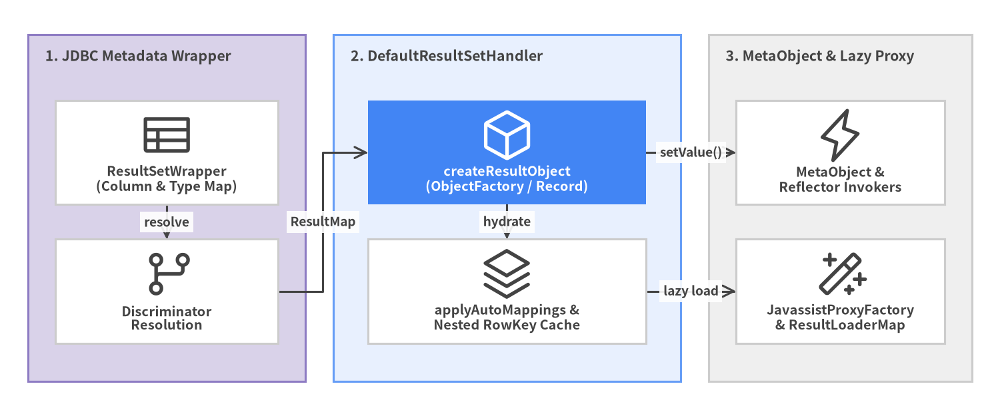
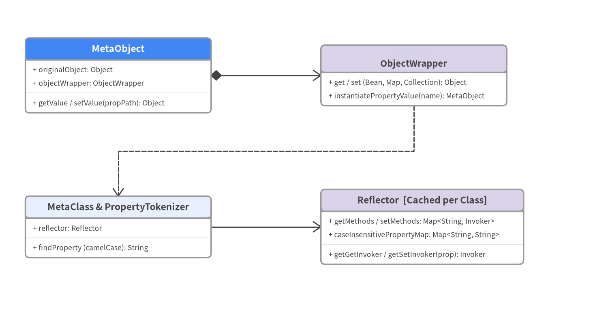

6. ResultSet マッピングと Reflection
JDBC ドライバから ResultSet が返却されると、DefaultResultSetHandler (src/main/java/org/apache/ibatis/executor/resultset/DefaultResultSetHandler.java, 1,300 行超) が行データを JavaBean、不変の Java record、ネストされた 1:N コレクション、あるいはストリーミング Cursor<T> へと変換します。

Source Code
from drawlib.canvas import save, setup
from drawlib.diagrams.architecture import ArchitectureDiagram, Node, NodeGroup, PhosphorIcon
from drawlib.styles import Colors, Styles
setup(width=144, height=60, dpi=150)
d = ArchitectureDiagram(
node_style=Styles.Dark,
node_text_style=Styles.DarkBold.patch(text_size=9.6),
edge_style=Styles.Dark.patch(line_width=1.5),
edge_text_style=Styles.DarkBold.patch(text_size=9.2),
node_card_style=Styles.Neutral.patch(shape_fill_color=Colors.White),
)
jdbc_grp = d.add(
NodeGroup(
"1. JDBC Metadata Wrapper",
width=40,
height=50,
style=Styles.SecondaryNeutral,
text_style=Styles.DarkBold.patch(text_size=10.2, halign="left", valign="top"),
),
xy=(4, 5),
)
n_rsw = jdbc_grp.add(Node("ResultSetWrapper\n(Column & Type Map)", icon=PhosphorIcon.TABLE, width=32, height=15), xy=(20, 33))
n_disc = jdbc_grp.add(Node("Discriminator\nResolution", icon=PhosphorIcon.GIT_BRANCH, width=32, height=15), xy=(20, 13))
core_grp = d.add(
NodeGroup(
"2. DefaultResultSetHandler",
width=50,
height=50,
style=Styles.PrimaryNeutral,
text_style=Styles.DarkBold.patch(text_size=10.2, halign="left", valign="top"),
),
xy=(48, 5),
)
n_inst = core_grp.add(
Node(
"createResultObject\n(ObjectFactory / Record)",
icon=PhosphorIcon.CUBE,
width=40,
height=15,
style=Styles.White,
text_style=Styles.WhiteBold.patch(text_size=9.6),
card_style=Styles.PrimaryFlat,
),
xy=(25, 33),
)
n_nest = core_grp.add(Node("applyAutoMappings &\nNested RowKey Cache", icon=PhosphorIcon.STACK, width=40, height=15), xy=(25, 13))
refl_grp = d.add(
NodeGroup(
"3. MetaObject & Lazy Proxy",
width=38,
height=50,
style=Styles.Neutral,
text_style=Styles.DarkBold.patch(text_size=10.2, halign="left", valign="top"),
),
xy=(102, 5),
)
n_meta = refl_grp.add(Node("MetaObject &\nReflector Invokers", icon=PhosphorIcon.LIGHTNING, width=30, height=15), xy=(19, 33))
n_lazy = refl_grp.add(Node("JavassistProxyFactory\n& ResultLoaderMap", icon=PhosphorIcon.MAGIC_WAND, width=30, height=15), xy=(19, 13))
n_rsw.connect(n_disc, label="resolve")
n_disc.connect(n_inst, label="ResultMap")
n_inst.connect(n_nest, label="hydrate")
n_inst.connect(n_meta, label="setValue()")
n_nest.connect(n_lazy, label="lazy load")
d.draw(xy=(0, 0))
save()
org.apache.ibatis.reflection サブシステム（全36ファイル）の内部構造
行ごとに低速な Class.getMethod() を繰り返すのを避けるため、MyBatis 3 はクラス単位のリフレクション情報を DefaultReflectorFactory (ConcurrentHashMap<Class<?>, Reflector>) にキャッシュします。

Source Code
from drawlib.canvas import save, setup
from drawlib.diagrams.class_diagram import ClassDiagram, ClassNode
from drawlib.fonts import FontMonoSpace, FontRoboto
from drawlib.styles import Colors, Styles
setup(width=144, height=74, dpi=150)
cd = ClassDiagram(
width=144.0,
height=74.0,
node_style=Styles.Neutral.patch(
shape_fill_color=Colors.White,
shape_line_color=Colors.Gray6,
text_color=Colors.Dark,
text_font=FontMonoSpace.ROBOTO_MONO_REGULAR,
text_size=9.2,
),
header_style=Styles.PrimaryNeutral.patch(
shape_line_color=Colors.Gray6,
text_color=Colors.Dark,
text_font=FontRoboto.ROBOTO_BOLD,
text_size=9.8,
),
edge_style=Styles.Dark.patch(line_width=1.4),
edge_text_style=Styles.DarkBold.patch(text_font=FontRoboto.ROBOTO_BOLD, text_size=9.2),
)
hero_hdr = Styles.PrimaryFlat.patch(text_color=Colors.White, text_font=FontRoboto.ROBOTO_BOLD, text_size=9.8)
sec_hdr = Styles.SecondaryNeutral.patch(shape_line_color=Colors.Gray6, text_color=Colors.Dark, text_font=FontRoboto.ROBOTO_BOLD, text_size=9.8)
n_meta = cd.add(
ClassNode("MetaObject", width=44.0, header_style=hero_hdr)
.add_attribute("originalObject", "Object")
.add_attribute("objectWrapper", "ObjectWrapper")
.add_method("getValue / setValue", "propPath", "Object"),
xy=(28.0, 56.0),
)
n_wrap = cd.add(
ClassNode("ObjectWrapper", stereotype="interface", width=44.0, header_style=sec_hdr)
.add_method("get / set (Bean, Map, Collection)", "prop", "Object")
.add_method("instantiatePropertyValue", "name", "MetaObject"),
xy=(98.0, 56.0),
)
n_mclass = cd.add(
ClassNode("MetaClass & PropertyTokenizer", width=44.0)
.add_attribute("reflector", "Reflector")
.add_method("findProperty (camelCase)", "name", "String"),
xy=(28.0, 20.0),
)
n_refl = cd.add(
ClassNode("Reflector [Cached per Class]", width=48.0, header_style=sec_hdr)
.add_attribute("getMethods / setMethods", "Map<String, Invoker>")
.add_attribute("caseInsensitivePropertyMap", "Map<String, String>")
.add_method("getGetInvoker / getSetInvoker", "prop", "Invoker"),
xy=(100.0, 20.0),
)
cd.connect(n_meta, n_wrap, "composition", directed=True, start_side="right", end_side="left")
cd.connect(n_wrap, n_mclass, "dependency", start_side="bottom", end_side="top")
cd.connect(n_mclass, n_refl, "association", directed=True, start_side="right", end_side="left")
cd.draw(xy=(0.0, 0.0))
save()
主要コンポーネントと実装メカニズム
| コンポーネント | 実装ファイル | アーキテクチャ上の役割 |
|---|---|---|
ResultSetWrapper |
executor/resultset/ResultSetWrapper.java |
クエリごとに1度だけ ResultSetMetaData を抽出し、ResultMap ごとのマッピング済みカラムと自動マッピング対象カラムをキャッシュ。 |
ResultMappingConstructorResolver |
executor/resultset/ResultMappingConstructorResolver.java |
<constructor> / @Arg 定義や Java record クラス・不変オブジェクトのコンストラクタ引数を名前または型で自動照合してインスタンス化。 |
ネスト結合の重複排除 (createRowKey) |
DefaultResultSetHandler.java:1012-1120 |
<collection> / <association> の JOIN マッピング時、親行の主キーから CacheKey を計算し、nestedResultObjects マップ上で子要素リストへ集約。 |
PropertyTokenizer |
reflection/property/PropertyTokenizer.java |
orders[0].billingAddress.postalCode のようなネスト式をトークン分割し、中間オブジェクトが null の場合は自動生成して値をセット。 |
JavassistProxyFactory と ResultLoaderMap |
executor/loader/javassist/JavassistProxyFactory.java |
fetchType="lazy" の際、同梱された Javassist で対象 Bean のサブクラスプロキシを生成し、対象プロパティの getter 呼び出し時に ResultLoader.loadResult() を遅延実行。 |